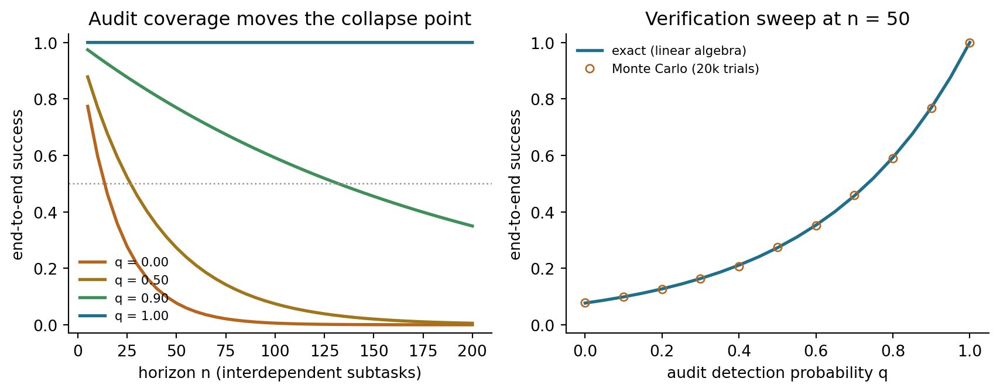

Complex real-world tasks decompose into sequences of interdependent steps, each of which may require distinct resources, produce intermediate artifacts consumed by later steps, and fail in ways that cascade through the plan. Classical AI planning formalizes this structure precisely: given a world state \(s_0\), a goal condition \(g\), and a set of actions \(\mathcal{A}\) each specified by preconditions and effects, find a sequence \(\langle a_1, a_2, \ldots, a_n \rangle\) that transitions \(s_0\) to some \(s_n \models g\).
STRIPS (Stanford Research Institute Problem Solver) introduced this representation in the 1970s. Each action \(a \in \mathcal{A}\) carries a precondition list \(\text{pre}(a)\), an add list \(\text{add}(a)\), and a delete list \(\text{del}(a)\). Applying \(a\) to state \(s\) yields \((s \setminus \text{del}(a)) \cup \text{add}(a)\) whenever \(\text{pre}(a) \subseteq s\). Planning Domain Definition Language (PDDL) extended this formalism with typed objects, numeric fluents, temporal constraints, and probabilistic effects, enabling solvers such as Fast Downward and LAMA to tackle industrial logistics, robotic manipulation, and scheduling problems.
The limitation of classical planning is the world model bottleneck: every predicate, every object, and every action schema must be hand-specified in the formal language. For open-domain tasks expressed in natural language — “book me the cheapest flight to Paris that still lets me attend Tuesday’s 3 p.m. standup, then draft an itinerary” — no PDDL representation exists. The set of relevant predicates is not known in advance; the effects of tool invocations are complex and context-dependent; and goal specifications are ambiguous in ways only resolvable through pragmatic inference.
Large language models offer a different regime: they encode vast amounts of commonsense and procedural knowledge from pre-training and can generate plans expressed in the same natural language as the task specification. The LLM functions as an approximate world model, predicting plausible next actions, their likely outcomes, and when re-planning is needed. Execution uses external tools — code interpreters, web search APIs, database queries — that ground the model’s reasoning in real computation. This section traces the progression from chain-of-thought prompting through structured plan-and-execute systems and tree-search methods.
231.2 Chain-of-Thought Prompting
231.2.1 From Direct Prediction to Intermediate Reasoning
Standard few-shot prompting conditions a language model to produce an answer \(y\) given a question \(x\) by maximizing:
\[P(y \mid x) = \prod_{t} P(y_t \mid x, y_{<t})\]
For arithmetic or multi-step reasoning tasks, the optimal \(y\) is a final answer that depends on intermediate computations not expressed in \(x\). When the model must compress the full reasoning chain into a single token prediction, it can only succeed if the mapping from \(x\) to \(y\) can be captured by a shallow pattern in the training distribution. For problems requiring five or more compositional steps, this fails systematically.
Wei et al. (2022) proposed chain-of-thought prompting: augment each few-shot exemplar with an explicit intermediate reasoning chain \(c\) so the model learns to generate:
The chain \(c\) contains natural-language computations (arithmetic steps, logic deductions, sub-goal states) that serve as intermediate variables. Because the model generates \(c\) before \(y\), the conditional \(P(y \mid x, c)\) is evaluated at a context that already contains the resolved sub-computations, dramatically reducing the complexity of the remaining prediction. Empirically, this can be decomposed as:
where each \(\Delta_i\) is the log-odds contribution of sub-result \(r_i \in c\) to the final answer. When sub-results are individually easy to verify and the model assigns high probability to correct intermediates, the chain provides strong guidance.
Wei et al. (2022) showed that chain-of-thought prompting produces substantial gains on the GSM8K math benchmark, SVAMP, and BIG-Bench hard tasks — but only for models with approximately 100 billion parameters or more. Smaller models generate incoherent chains that do not improve, and sometimes hurt, final accuracy. This emergence at scale suggests the capability requires sufficient representational capacity to maintain a coherent reasoning trace over dozens of tokens.
The zero-shot variant (“Let’s think step by step”) introduced by Kojima et al. (2022) demonstrates that the reasoning scaffold is partially encoded during pre-training: merely eliciting deliberate sequential reasoning improves performance without any exemplars.
231.2.2 Limitations of Linear Chains
Chain-of-thought reasoning is strictly linear: a single path from question to answer. If the model takes a wrong turn at step \(k\), all subsequent steps build on a flawed premise and the error propagates irreversibly. The model has no mechanism to backtrack, evaluate alternative paths, or select among competing hypotheses. Tasks that require exploration — where the correct reasoning path is not obvious a priori — expose this limitation.
231.3 Plan-and-Execute Architectures
231.3.1 Separating Planning from Execution
Wang et al. (2023) formalized the plan-and-execute paradigm, which decouples the cognitive tasks of planning and execution into separate agents. A planner agent \(\pi_P\) takes the high-level task \(T\) and produces a structured plan:
where each step \(s_i\) specifies an action type, its arguments, and optionally which prior steps it depends on. An executor agent \(\pi_E\) then carries out each step sequentially or in parallel according to the dependency graph, invoking tools and accumulating results:
\[r_i = \pi_E(s_i, \{r_j : j \prec i\})\]
where \(j \prec i\) denotes step \(j\) precedes step \(i\) in the dependency order. The final response is synthesized from \(\{r_i\}\).
This separation offers several advantages over interleaved agent loops such as ReAct (Yao et al., 2022). First, the planner can reason about the full task structure without being distracted by execution details. Second, the executor can focus on reliable tool invocation without maintaining global task context. Third, plan-level re-planning — triggered when \(r_i\) indicates failure — can update \(\langle s_{i+1}, \ldots, s_n \rangle\) globally rather than greedily patching one step at a time. Wang et al. (2023) showed plan-and-execute outperforms ReAct on long-horizon tasks across several benchmarks, with the gap widening as the number of required steps increases.
231.3.2 Re-planning Under Failure
When executor step \(i\) fails or returns an unexpected result, naive continuation compounds errors. A re-planner receives the original task \(T\), the partial execution history \(\langle (s_1, r_1), \ldots, (s_i, r_i) \rangle\), and generates a revised plan for the remaining steps:
\[\text{plan}' = \pi_P(T, \text{history})\]
This mirrors closed-loop control: the plan is a hypothesis about action sequences, updated in light of observed outcomes. In practice, re-planning frequency trades off accuracy against API cost; architectures typically trigger re-planning only on explicit failure signals rather than after every step.
Shen et al. (2023) demonstrated that an LLM can serve as a controller that dynamically selects and orchestrates specialized models rather than executing tasks itself. HuggingGPT uses ChatGPT as a central planner with access to a catalog of HuggingFace models, each with a natural-language description of its input/output types and capabilities.
The system operates in four phases. In Task Planning, the controller parses the user request into a dependency graph of sub-tasks, each tagged with a task type (image classification, text generation, object detection, etc.) and the data flow between them. In Model Selection, for each sub-task the controller queries the model catalog and selects the best-matching model based on capability description and user context — for example, routing an image captioning sub-task to BLIP-2 and a subsequent question-answering sub-task to a reading-comprehension model conditioned on that caption.
In Task Execution, the selected models are invoked via HuggingFace’s inference API, and outputs are cached. Finally, in Response Generation, the controller synthesizes a natural-language response by integrating model outputs, handling cases where intermediate results must be passed as inputs to downstream models.
The key insight is that model capability descriptions serve as an informal type system: the controller matches task requirements to model affordances through natural-language reasoning rather than explicit type checking. This allows the system to compose models it has never seen composed before, generalizing to novel multi-modal task combinations at inference time. Failure modes include incorrect model selection when capability descriptions are ambiguous and error propagation when an upstream model’s output is malformed for a downstream model’s expected input format.
231.5 A Taxonomy of LLM Planning Methods
Huang et al. (2024) surveyed the landscape of LLM planning and proposed a taxonomy with four primary strategies.
Subgoal decomposition recursively breaks a task into sub-goals until each is directly executable. Hierarchical task networks in classical planning instantiate this structure formally; in LLM systems it arises naturally from prompts such as “Break this task into smaller steps.” The key challenge is decomposition granularity: too coarse and steps are themselves complex planning problems; too fine and the plan is verbose and fragile to minor phrasing variations.
Multi-plan selection generates a population of candidate plans and selects among them using an evaluator — a separate model, a heuristic scorer, or majority vote. Self-consistency (Wang et al., 2022) applies this idea to reasoning: sample \(k\) chains of thought, aggregate answers by majority vote, and return the plurality result. The population of plans trades off computational cost against robustness to individual plan failures.
External planner guidance uses classical planners to verify or extend LLM-generated plans. An LLM translates the natural-language task into a PDDL problem file; a sound planner (Fast Downward, LAMA) finds a provably correct plan if one exists; the LLM translates the plan back into natural-language instructions. This hybrid approach inherits formal correctness guarantees for the structured component while using the LLM for the grounding step that classical planners cannot perform.
Reflection and refinement closes the loop between execution and planning by having the LLM critique its own outputs and iteratively revise. Reflexion (Shinn et al., 2023) stores execution feedback in a verbal memory buffer and conditions the next plan attempt on both the original task and accumulated failure descriptions. This is analogous to policy gradient methods in reinforcement learning, with the LLM’s self-critique playing the role of the reward signal.
231.5.1 Key Failure Modes
Huang et al. (2024) identify three systematic failure modes that cut across all paradigms. Overconfident incorrect plans: LLMs assign high probability to plausible-sounding plans that violate physical or logical constraints — for example, a cooking plan that uses a cooking step before a step that produces the ingredient. The model has no explicit constraint checker, so precondition violations go undetected. Inability to detect plan failures: even when an executor returns an error, the LLM may not recognize it as a failure signal requiring re-planning, particularly when error messages are terse or ambiguous. Hallucinated preconditions: the model assumes the existence of resources, APIs, or world states that do not exist, generating plans that cannot be executed by any executor.
231.6 Tree of Thoughts
231.6.1 Search Over Reasoning States
Yao et al. (2023b) generalized chain-of-thought reasoning from a linear path to a tree of thoughts (ToT), enabling systematic search over the space of possible reasoning trajectories. Define a reasoning state \(s^{(d)}\) at depth \(d\) as a partial problem-solving context consisting of the problem statement and \(d\) reasoning steps. A thought generator \(G(s^{(d)})\) samples \(k\) candidate next thoughts \(\{t_1^{(d+1)}, \ldots, t_k^{(d+1)}\}\) from the LLM, producing \(k\) successor states \(\{s_1^{(d+1)}, \ldots, s_k^{(d+1)}\}\).
A state evaluator \(V(s^{(d)})\) assigns a score to each state — either by prompting the LLM to estimate likelihood of success from that state, or via a simple heuristic. The search algorithm (BFS, DFS, or beam search) then traverses the tree, expanding high-value states and pruning low-value ones. The full algorithm is:
where leaves are terminal reasoning states and score aggregates evaluator values along the path. With beam width \(b\) and maximum depth \(D\), the computational cost is \(O(k \cdot b \cdot D)\) model calls versus \(O(D)\) for chain-of-thought — a multiplicative overhead that is justified when the task requires genuine exploration.
On the Game of 24 (produce the number 24 from four given numbers using arithmetic operations), chain-of-thought achieves approximately 4% success rate while ToT with BFS achieves 74%. The task requires backtracking — some arithmetic subexpressions are dead ends — which is impossible in a linear chain but natural in tree search. Creative writing tasks with multiple structural constraints and crossword puzzle solving show similar gains.
231.6.2 Relationship to Classical Search
Tree of Thoughts is a learned heuristic search: the generator plays the role of a successor function and the evaluator plays the role of a heuristic function \(h(n)\) in A* or beam search. Classical heuristics are hand-designed to be admissible (never overestimate cost to goal); LLM evaluators are approximate and may be miscalibrated, but generalize to arbitrary domains without domain-specific engineering. The resulting algorithm has the flavor of Monte Carlo Tree Search with a learned policy and value function, analogous to AlphaGo’s dual-network architecture but operating in the space of natural-language reasoning steps.
231.7 Implementation: A Minimal Plan-and-Execute System
The following implementation demonstrates plan-and-execute with a mock planner that templates plans from recognized task patterns. No LLM API is required; the planner uses rule-based templates to generate JSON plans, and the executor processes each step using pure Python tools.
import jsonimport refrom typing import AnyTOOL_REGISTRY: dict[str, Any] = {}def tool(name: str):def decorator(fn): TOOL_REGISTRY[name] = fnreturn fnreturn decorator@tool("search")def search(query: str, **_) ->str: results = {"population of France": "67.4 million (2023 estimate)","capital of France": "Paris","Eiffel Tower height": "330 metres including antenna", }for key, val in results.items():if key.lower() in query.lower():return valreturnf"[mock result for: {query}]"@tool("calculate")def calculate(expression: str, **_) ->str: allowed =set("0123456789 +-*/().,") sanitized ="".join(c for c in expression if c in allowed)try: result =eval(sanitized, {"__builtins__": {}}) # noqa: S307returnstr(result)exceptExceptionas exc:returnf"error: {exc}"@tool("summarize")def summarize(text: str, **_) ->str: sentences = re.split(r"(?<=[.!?])+", text.strip())return sentences[0] if sentences else text[:80]def mock_planner(task: str) ->list[dict[str, Any]]:"""Rule-based planner that templates plans for recognized task patterns.""" task_lower = task.lower()if"population"in task_lower and"capital"in task_lower:return [ {"id": 1, "tool": "search", "args": {"query": "capital of France"}, "depends_on": []}, {"id": 2, "tool": "search", "args": {"query": "population of France"}, "depends_on": []}, {"id": 3, "tool": "summarize", "args": {"text": "RESULT_1 | RESULT_2"}, "depends_on": [1, 2]}, ]if"calculate"in task_lower orany(op in task else""for op in ["+", "-", "*", "/"]): expr = re.search(r"[\d\s\+\-\*/\(\)\.]+", task) expression = expr.group(0).strip() if expr else"0"return [ {"id": 1, "tool": "calculate", "args": {"expression": expression}, "depends_on": []}, ]return [ {"id": 1, "tool": "search", "args": {"query": task}, "depends_on": []}, {"id": 2, "tool": "summarize", "args": {"text": "RESULT_1"}, "depends_on": [1]}, ]def resolve_args(args: dict[str, Any], results: dict[int, str]) ->dict[str, Any]:"""Substitute RESULT_N placeholders with actual execution results.""" resolved = {}for key, val in args.items():ifisinstance(val, str):for step_id, result in results.items(): val = val.replace(f"RESULT_{step_id}", result) resolved[key] = valreturn resolveddef execute_plan(plan: list[dict[str, Any]]) ->dict[int, str]: results: dict[int, str] = {} remaining =list(plan)while remaining: ready = [ step for step in remainingifall(dep in results for dep in step["depends_on"]) ]ifnot ready:raiseRuntimeError("Dependency cycle detected in plan")for step in ready: step_id = step["id"] tool_name = step["tool"] resolved = resolve_args(step["args"], results)if tool_name notin TOOL_REGISTRY: results[step_id] =f"[unknown tool: {tool_name}]"else: results[step_id] = TOOL_REGISTRY[tool_name](**resolved) remaining.remove(step)return resultsdef plan_and_execute(task: str) ->None:print(f"Task: {task}") plan = mock_planner(task)print(f"\nGenerated plan ({len(plan)} steps):")print(json.dumps(plan, indent=2))print("\nExecution:") results = execute_plan(plan)for step_id, result insorted(results.items()):print(f" Step {step_id}: {result}") final_step =max(results)print(f"\nFinal output: {results[final_step]}")plan_and_execute("What is the capital and population of France?")print()plan_and_execute("calculate 330 * 1000 / 67.4")
The executor respects the dependency graph by processing steps in topological order: a step becomes ready only once all its declared dependencies have produced results. The resolve_args function substitutes RESULT_N placeholders so downstream steps can consume upstream outputs without the planner explicitly passing result objects.
def demo_replanning() ->None:"""Demonstrate re-planning when a step returns an error."""def flaky_search(query: str, **_) ->str:if"population"in query:raiseValueError("API rate limit exceeded")returnf"[result for: {query}]"def replan(task: str, history: list[tuple[int, str, str]]) ->list[dict]:print(f" Re-planning after {len(history)} executed steps...") failed_tools = {tool for _, tool, result in history if result.startswith("error")}return [ {"id": len(history) +1, "tool": "search","args": {"query": task +" (fallback)"}, "depends_on": []} ] task ="Find the population of France" plan = [{"id": 1, "tool": "search", "args": {"query": "population of France"}, "depends_on": []}] history: list[tuple[int, str, str]] = []for step in plan:try: result = flaky_search(**step["args"]) history.append((step["id"], step["tool"], result))exceptValueErroras exc: error_result =f"error: {exc}" history.append((step["id"], step["tool"], error_result))print(f" Step {step['id']} failed: {exc}") fallback_plan = replan(task, history)for fb_step in fallback_plan: result = TOOL_REGISTRY["search"](**fb_step["args"])print(f" Fallback step {fb_step['id']}: {result}")breakdemo_replanning()
This second block illustrates graceful degradation: when a step raises an exception, the system captures the error in the history and invokes the re-planner, which generates a fallback plan using the accumulated context. In production systems, the re-planner would be an LLM call conditioned on the task description and the full execution history.
231.8 Externalized Task State: The Manage-Execute-Audit Loop
The minimal system of Section 7 holds everything in one place. The plan lives in the planner’s prompt, the intermediate results \(\{r_i\}\) accumulate in the executor’s context, and the judgement that a step succeeded is whatever the executor said about its own output. That arrangement is the standard agent harness, and Ma et al. (2026) argues it has two structural defects that only become visible when the horizon gets long. Task execution, task state, and completion assessment all share a single growing context, so state is hard to track; and because the completion assessment is produced by the same process that did the work, an incorrect self-assessment is written into the state that every later step conditions on.
LongHorizon-Harness reformulates long-horizon execution as a task-state management problem. The task state is maintained explicitly outside the execution loop, and it is updated only with facts independently verified against the environment. The Manage-Execute-Audit (MEA) loop implements this with three separated roles: a manager that owns the task state and decides the next subtask, a fresh-context executor that performs that subtask and nothing else, and a read-only auditor that inspects the environment to verify the resulting state before the next round begins. A lightweight component the authors call AgentAdapter lets models and harness backends be swapped underneath this loop without modifying their native agent loops, which is what makes the same MEA wrapper measurable across very different agents.
Everything in this section is an argument about error propagation, so it is worth deriving that propagation carefully before looking at the architecture.
231.8.1 Why Long Horizons Are Brutal Even Without Self-Assessment Error
Let a task decompose into \(n\) interdependent subtasks that must all be completed correctly, and let each subtask be executed correctly with probability \(p\), independently across subtasks. Because the subtasks are interdependent, a single incorrect step invalidates the whole chain, so end-to-end success is
\[P_{\text{chain}}(n) = p^{n}.\]
Taking logarithms makes the shape explicit:
\[\log P_{\text{chain}}(n) = n \log p \approx -n(1 - p) \quad \text{for } p \to 1,\]
using \(\log p = \log(1 - (1-p)) \approx -(1-p)\). Success decays geometrically in the horizon with rate \(1-p\), so the natural scale of the problem is the half-life horizon \(n_{1/2}\) at which success drops to one half:
Work the numbers. At a per-step accuracy of \(p = 0.95\), which would be an excellent tool-calling agent, \(n_{1/2} \approx 13.5\) steps, and a fifty-step task succeeds with probability \(0.95^{50} = 0.0769\), under eight percent. The per-step number sounds fine and the end-to-end number is a disaster. This is the arithmetic that makes long-horizon agents hard, and it is entirely independent of any claim about self-assessment: it is what you get even if the agent’s beliefs about its own progress are perfectly calibrated.
231.8.2 Self-Assessment Error Turns Errors Into an Absorbing State
The failure mode Ma et al. (2026) targets is worse than geometric decay, because it changes what a failure is. Write \(\sigma\) for the true state of the environment and \(\hat{\sigma}\) for the task state the harness tracks. Define two conditions:
\(G\) (grounded): \(\hat{\sigma}\) agrees with \(\sigma\) on everything later subtasks depend on.
\(C\) (corrupted): \(\hat{\sigma}\) has diverged from \(\sigma\).
In a harness with no independent verification, the executor’s own report is the state update. When a step is executed incorrectly but reported as complete, the harness enters \(C\), and from there every subsequent subtask is planned against, and evaluated against, a fiction. Nothing in the loop can restore agreement, because the only channel by which \(\hat{\sigma}\) is ever revised is the executor’s self-report, which has no privileged access to \(\sigma\). In Markov terms, \(C\) is an absorbing state.
Now introduce the auditor. Let \(q \in [0,1]\) be the probability that an incorrect step is detected by an independent read-only inspection of the environment before it is written into \(\hat{\sigma}\). On detection the round is spent on repair rather than on progress, and \(\hat{\sigma}\) is re-grounded from the environment.
Model the process over \(n\) subtasks with a round budget \(B\). The state space is
where \((i)\) means “\(i\) subtasks verifiably complete and the harness is grounded”, and \(C\) is the corrupted sink. From \((i)\) with \(i < n\), one round transitions as
with \((n)\) and \(C\) absorbing. Reading the three branches: the executor gets the subtask right and progress advances; the executor errs, the auditor catches it against the environment, and the round is burned on repair with progress unchanged; or the executor errs and the error passes the audit, entering \(\hat{\sigma}\) permanently. Writing \(P\) for the resulting \((n+2) \times (n+2)\) matrix and \(e_0\) for the indicator of \((0)\), end-to-end success within budget is the mass on the success state,
\[P_{\text{MEA}}(n, q, B) = \left(e_0^{\top} P^{B}\right)_{n}.\]
The two limits recover the intuition. At \(q = 0\) there is no self-loop, so reaching \((n)\) requires \(n\) consecutive correct rounds and any extra budget is worthless: \(P_{\text{MEA}}(n, 0, B) = p^{n}\) for every \(B \ge n\), exactly the chain of Section 3. At \(q = 1\) the state \(C\) is unreachable, progress becomes a simple binomial counter, and success is \(\Pr[\mathrm{Bin}(B, p) \ge n]\).
Absorption behaviour. Lump away the progress coordinate and track only whether the run is still grounded. From every non-terminal \((i)\) the escape probability into \(C\) is the same constant
\[\lambda = (1-p)(1-q),\]
independent of \(i\), so the probability of still being grounded after \(t\) rounds obeys a pure geometric survival law:
\[g_t = \Pr[\text{grounded after } t \text{ rounds}] = (1 - \lambda)^{t}.\]
This is the formal core of the argument, and it deserves a careful reading. For any \(q < 1\) we have \(\lambda > 0\), so \(\{C\}\) is the unique closed communicating class of the chain, the stationary distribution is the point mass \(\pi = \delta_C\), and \(g_t \to 0\): given enough rounds, corruption is certain. Verification with \(q < 1\) does not remove the absorbing state. What it does is rescale the absorption rate by the factor \((1-q)\), stretching the grounded half-life
At \(q = 1\) the behaviour changes in kind rather than in degree. Now \(\lambda = 0\), the set \(\{(0), \ldots, (n)\}\) is closed, \(C\) is unreachable, and \((n)\) is the unique absorbing state reachable from \((0)\). Absorption into success becomes certain given unbounded budget. The auditor has converted an error from an event that destroys the run into an event that consumes a round.
That exchange rate is the real economics of MEA, and it is easy to price. Under full verification the expected number of rounds to advance one subtask is \(1/p\), so the expected rounds to finish is \(n/p\) and the budget factor \(\gamma = B/n\) must satisfy \(\gamma > 1/p\), which is \(1.053\) at \(p = 0.95\). Audited execution buys a qualitative change in the failure mode for a small multiple of the round count, plus the cost of the auditor call itself.
231.8.3 Simulating the Collapse
The cell below builds \(P\) explicitly and solves for absorption by repeated squaring, sweeping both the horizon \(n\) and the audit probability \(q\). It then confirms the exact answer against a vectorised Monte Carlo simulation of the same process, so the linear algebra and the sampled dynamics have to agree.
import numpy as npimport matplotlib.pyplot as pltSEED =20260803P_STEP =0.95# per-subtask probability the executor gets it rightBUDGET_FACTOR =2.0# rounds available per required subtaskN_GRID = np.arange(5, 205, 5)Q_LEVELS = [0.0, 0.5, 0.9, 1.0]N_FIXED =50MC_TRIALS =20_000def exact_success(n, p, q, budget_factor=BUDGET_FACTOR):"""Absorption probability for the (progress, corrupted) chain, solved by repeated squaring of the transition matrix over B = budget_factor * n rounds.""" B =int(round(budget_factor * n)) m = n +2# states 0..n (progress) plus one corrupted sink P = np.zeros((m, m)) corrupt = n +1for i inrange(n): P[i, i +1] = p # subtask done correctly P[i, i] = (1.0- p) * q # error caught by the auditor, round burned P[i, corrupt] = (1.0- p) * (1.0- q) # error accepted into task state P[n, n] =1.0 P[corrupt, corrupt] =1.0 v = np.zeros(m); v[0] =1.0 M = P.copy(); e = Bwhile e:if e &1: v = v @ M M = M @ M e >>=1returnfloat(v[n])def mc_success(n, p, q, trials=MC_TRIALS, seed=0, budget_factor=BUDGET_FACTOR):"""Monte Carlo confirmation of the same process, vectorised over trials.""" rng = np.random.default_rng(seed) B =int(round(budget_factor * n)) prog = np.zeros(trials, dtype=np.int32) alive = np.ones(trials, dtype=bool)for _ inrange(B): active = alive & (prog < n)ifnot active.any():break u = rng.random(trials) ok = active & (u < p) bad = active & (u >= p) caught = bad & (rng.random(trials) < q) prog[ok] +=1 alive[bad &~caught] =False# unaudited error: absorbed into Creturnfloat(np.mean(alive & (prog >= n)))def collapse_horizon(p, q, threshold=0.5, grid=N_GRID):for n in grid:if exact_success(int(n), p, q) < threshold:returnint(n)returnNonedef half_life(p, q):"""Rounds until the lumped two-state chain has lost half its mass to C.""" lam = (1.0- p) * (1.0- q)if lam <=0.0:returnfloat("inf")return np.log(2.0) / (-np.log(1.0- lam))curves = {q: np.array([exact_success(int(n), P_STEP, q) for n in N_GRID])for q in Q_LEVELS}q_grid = np.linspace(0.0, 1.0, 21)exact_q = np.array([exact_success(N_FIXED, P_STEP, q) for q in q_grid])mc_q_grid = np.linspace(0.0, 1.0, 11)mc_q = np.array([mc_success(N_FIXED, P_STEP, q, seed=int(1000+7* i))for i, q inenumerate(mc_q_grid)])mc_exact_at = np.array([exact_success(N_FIXED, P_STEP, q) for q in mc_q_grid])max_gap =float(np.max(np.abs(mc_q - mc_exact_at)))print(f"{'audit q':>9}{'n=10':>9}{'n=25':>9}{'n=50':>9}{'n=100':>9}"f"{'n=200':>9}{'collapse n':>12}{'half-life':>11}")print("="*77)for q in Q_LEVELS: row = [exact_success(n, P_STEP, q) for n in (10, 25, 50, 100, 200)] ch = collapse_horizon(P_STEP, q) ch_s =f"{ch}"if ch isnotNoneelse">200" hl = half_life(P_STEP, q) hl_s ="inf"if np.isinf(hl) elsef"{hl:.1f}"print(f"{q:>9.2f}"+"".join(f"{v:>9.3f}"for v in row)+f"{ch_s:>12}{hl_s:>11}")print()print(f"p = {P_STEP}, round budget B = {BUDGET_FACTOR:.0f}n, collapse n = smallest n on the")print("grid with end-to-end success below 0.5")print(f"unaudited closed form p^n at n=50: {P_STEP **50:.4f} "f"(chain: {exact_success(50, P_STEP, 0.0):.4f})")print(f"max |Monte Carlo - exact| over the q sweep at n={N_FIXED}: {max_gap:.4f} "f"({MC_TRIALS} trials per point)")fig, ax = plt.subplots(1, 2, figsize=(9.0, 3.6))COLORS = ["#b5651d", "#a0761a", "#3f8f5a", "#1f6f8b"]for c, q inzip(COLORS, Q_LEVELS): ax[0].plot(N_GRID, curves[q], color=c, lw=2, label=f"q = {q:.2f}")ax[0].axhline(0.5, color="#999999", ls=":", lw=1)ax[0].set_xlabel("horizon n (interdependent subtasks)")ax[0].set_ylabel("end-to-end success")ax[0].set_title("Audit coverage moves the collapse point")ax[0].legend(frameon=False, fontsize=8)ax[0].set_ylim(-0.03, 1.03)ax[1].plot(q_grid, exact_q, color="#1f6f8b", lw=2, label="exact (linear algebra)")ax[1].plot(mc_q_grid, mc_q, "o", ms=5, mfc="none", color="#b5651d", label=f"Monte Carlo ({MC_TRIALS //1000}k trials)")ax[1].set_xlabel("audit detection probability q")ax[1].set_ylabel("end-to-end success")ax[1].set_title(f"Verification sweep at n = {N_FIXED}")ax[1].legend(frameon=False, fontsize=8)ax[1].set_ylim(-0.03, 1.03)for a in ax: a.spines[["top", "right"]].set_visible(False)fig.tight_layout()
audit q n=10 n=25 n=50 n=100 n=200 collapse n half-life
=============================================================================
0.00 0.599 0.277 0.077 0.006 0.000 15 13.5
0.50 0.771 0.522 0.273 0.074 0.006 30 27.4
0.90 0.949 0.877 0.769 0.592 0.350 135 138.3
1.00 1.000 1.000 1.000 1.000 1.000 >200 inf
p = 0.95, round budget B = 2n, collapse n = smallest n on the
grid with end-to-end success below 0.5
unaudited closed form p^n at n=50: 0.0769 (chain: 0.0769)
max |Monte Carlo - exact| over the q sweep at n=50: 0.0035 (20000 trials per point)

Figure 231.1: Long-horizon execution as an absorbing Markov chain, with per-subtask accuracy p = 0.95 and a round budget B = 2n. Left: end-to-end success against horizon length for four audit coverages, with the dotted line marking the 50 percent collapse threshold. Right: the audit sweep at a fixed horizon of 50 subtasks, with the exact absorption probability from matrix powers overlaid by Monte Carlo estimates from 20k independent runs per point.
The printed table reports the collapse horizon, defined as the smallest \(n\) on the grid at which end-to-end success falls below one half. Unaudited execution collapses at \(n = 15\). Halving the error rate with \(q = 0.5\) pushes that only to \(n = 30\), which is the \((1-q)\) rescaling of \(\lambda\) showing up as a doubling and nothing more. At \(q = 0.9\) the collapse horizon moves to \(n = 135\), and at \(q = 1.0\) there is no collapse anywhere on the grid, with success still \(1.000\) at \(n = 200\). The half-life column tracks the collapse column closely (13.5, 27.4, 138.3, and infinity), which is the geometric survival law \(g_t = (1-\lambda)^t\) asserting itself: the horizon at which a run dies is set by the corruption rate, not by the per-step accuracy alone.
At the fifty-subtask horizon the numbers are stark. Unaudited execution succeeds \(0.077\) of the time, matching the closed form \(0.95^{50} = 0.0769\) exactly, since \(q = 0\) makes the chain degenerate to \(p^n\). Perfect verification succeeds \(1.000\) of the time on the same task with the same executor and the same per-step accuracy. Nothing about the executor changed. The largest discrepancy between the exact absorption probability and the Monte Carlo estimate across the whole \(q\) sweep is \(0.0035\), comfortably inside the sampling noise of 20,000 trials, so the matrix algebra and the simulated dynamics describe the same process.
Two honest caveats about the model. It assumes per-step errors are independent, whereas real executor errors cluster around hard subtasks and ambiguous instructions. And it assumes the auditor’s detections are independent of the executor’s errors, which is exactly the assumption that fails if the auditor sees the executor’s reasoning trace: an auditor that inherits the executor’s context inherits its misconception, and \(q\) collapses toward zero. This is precisely why Ma et al. (2026) specifies the auditor as read-only over the environment rather than as a critic over the transcript. The independence is not an incidental design detail, it is the entire mechanism.
231.8.4 The Context-Growth Argument
The second defect is about cost and attention rather than correctness. Suppose the harness appends roughly \(a\) tokens of transcript per round and runs for \(T\) rounds, so at round \(t\) the context has length \(L_t = L_0 + a t\). A forward pass over a length-\(L\) prefix costs \(\Theta(L^2)\) in the attention layers, so cumulative attention cost over the episode is
cubic in the horizon. A fresh-context executor receives a compact rendering of the externalized task state plus the current subtask description, so its context is bounded by some constant \(L_{\star}\) regardless of how many rounds have elapsed, and the cumulative cost is \(\Theta(L_{\star}^2 T)\), linear in the horizon.
Dilution is the sharper problem. Suppose the decision at round \(t\) genuinely depends on \(m\) tokens of relevant state. In a growing context those tokens occupy a fraction
\[\frac{m}{L_0 + a t} = \Theta\!\left(\frac{1}{t}\right)\]
of the window, decaying to zero as the episode runs, while attention mass must be spread over an ever larger pool of stale observations, superseded plans, and tool output that was consumed two hundred rounds ago. In a fresh context that fraction is \(m / L_{\star}\), a constant. Externalizing the task state is what makes the constant possible: the manager hands the executor a summary of what is true, not the transcript that established it.
231.8.5 The Loop
flowchart TB
S[("Task state, external and durable")]
M["Manager: read state, choose next subtask"]
E["Executor: fresh context per subtask, tools"]
A["Auditor: read-only inspection of environment"]
V{"Verified against environment?"}
ENV[("Environment: files, shell, OS, services")]
DONE["Task complete"]
S --> M
M -->|"subtask spec only"| E
E -->|"mutating actions"| ENV
E -->|"claimed outcome"| A
ENV -->|"observed ground truth"| A
A --> V
V -->|"yes: commit verified facts"| S
V -->|"no: record discrepancy, re-ground"| S
S -->|"goal satisfied"| DONE
Read the diagram against the plan-and-execute architecture of Section 3 and four differences stand out.
State is an object, not a transcript. In plan-and-execute the state is implicit in the accumulated results \(\{r_i\}\) sitting in the executor’s window. Here it is a durable external store that the manager reads and writes. Its size is a function of the task, not of how long the episode has run.
The state update rule is restricted. Plan-and-execute admits \(r_i\) into the working context verbatim, whatever the executor reported. MEA admits only facts the auditor confirmed against the environment. This is the mechanism behind \(q\) in the model above, and it is the difference between an absorbing corruption state and a recoverable one.
Assessment is separated from execution. The auditor is a distinct read-only role, not the executor grading its own homework and not a critic reasoning over the executor’s trace. Reflection and refinement in the taxonomy of Section 5 is self-critique, which improves plans but cannot establish ground truth, because the critic and the actor share a model of the world. An auditor with environment access can.
The executor is stateless across subtasks. Plan-and-execute keeps one executor context alive across the whole plan. MEA gives each subtask a fresh context seeded from the task state, which bounds \(L_{\star}\) and removes the dilution term. It also means the executor cannot be misled by its own earlier mistaken narration, only by whatever the manager put into the state, which the auditor has already checked.
The re-planning of Section 3.2 survives, but its input changes. Instead of conditioning on \((T, \text{history})\) where history grows without bound, the manager conditions on \((T, \hat{\sigma})\) where \(\hat{\sigma}\) is bounded and verified.
Here is the loop skeleton. The Python version is illustrative rather than executable, in the style of the code in Section 7, because the manager, executor, and auditor are model calls; the Julia and Rust versions show the same control flow in their respective idioms.
Note the single load-bearing line in all three: only result.facts from a verified audit may enter verified_facts. Relax that to admit the executor’s claim directly and you have rebuilt the growing-context harness, absorbing state and all.
231.8.6 Reported Results
Ma et al. (2026) evaluate the harness by wrapping existing agents through AgentAdapter, which isolates the contribution of the loop from the contribution of the model. With Qwen 3.7-Plus as the underlying model, WeaveBench improves from 51.8 percent to 80.7 percent, Terminal-Bench 2.1 from 69.7 percent to 77.2 percent, and OSWorld 2.0 from 2.8 percent to 8.3 percent. With Claude Opus 4.7, performance on a subset of OSWorld 2.0 rises from 20.0 percent to 34.3 percent; note that this figure is a subset result and is therefore not comparable to the full-benchmark Qwen numbers above it. The paper was the most upvoted agent paper of its week on HuggingFace.
The spread across benchmarks is itself informative and lines up with the model derived above. WeaveBench, with the largest absolute gain, is the longest-horizon and most state-heavy of the three, which is where the \(p^n\) term dominates and where converting corruption into consumed rounds pays most. Terminal-Bench 2.1 starts from a strong baseline, so the headroom is smaller. OSWorld 2.0 remains in the single digits for Qwen even after a roughly threefold relative improvement, a reminder that the harness raises \(q\) but does nothing for \(p\): if the underlying model cannot reliably drive a GUI, no amount of auditing will make it drive one. Verification changes the shape of the failure curve. It does not manufacture per-step competence.
The practical costs are worth naming. The auditor is an extra model call per round, and repaired rounds consume budget, so a fixed accuracy target costs more tokens and more wall-clock than an unaudited loop that would have failed silently. Externalized state also requires the environment to be inspectable: MEA is natural for filesystems, shells, and operating systems where the auditor can read the result of an action, and much harder where actions are irreversible or their effects are not observable. Where audits are impossible, \(q\) is structurally zero and the geometric collapse of Section 8.1 applies with full force.
231.9 Synthesis and Practical Considerations
The progression from chain-of-thought to plan-and-execute to Tree of Thoughts reflects increasing formalization of the search structure latent in complex task solving. Chain-of-thought makes reasoning explicit but commits to a single linear path. Plan-and-execute separates the planning and execution concerns and enables structured re-planning. Tree of Thoughts makes the branching and evaluation structure explicit, enabling near-optimal search at the cost of multiplicative compute.
In practice, system designers choose among these based on task properties. For tasks with clear sequential dependencies and low ambiguity, plan-and-execute with deterministic re-planning suffices. For tasks requiring genuine exploration — where the optimal path is not identifiable without partial execution — Tree of Thoughts or Monte Carlo sampling with self-consistency scoring is more appropriate. For tasks requiring specialized models (vision, audio, structured prediction), the HuggingGPT paradigm of LLM-as-controller with a model catalog provides compositional generalization to novel multi-modal combinations.
The fundamental limitation across all paradigms is the grounding gap: the LLM’s internal representation of world state is statistical and approximate. Plans generated without access to real-time information may contain hallucinated preconditions or invalid action sequences. Closing this gap requires tight coupling between planning and execution, with real observations fed back into the planning context after each action — the core insight behind closed-loop agent architectures discussed in subsequent chapters.
231.10 References
Wei, J., Wang, X., Schuurmans, D., Bosma, M., Ichter, B., Xia, F., Chi, E., Le, Q., and Zhou, D. (2022). Chain-of-Thought Prompting Elicits Reasoning in Large Language Models. Advances in Neural Information Processing Systems, 35. https://proceedings.neurips.cc/paper/2022/hash/9d5609613524ecf4f15af0f7b31abca4-Abstract-Conference.html
Wang, L., Xu, W., Lan, Y., Hu, Z., Lan, Y., Lee, R. K.-W., and Lim, E.-P. (2023). Plan-and-Solve Prompting: Improving Zero-Shot Chain-of-Thought Reasoning by Large Language Models. Proceedings of ACL 2023. https://arxiv.org/abs/2305.04091
Shen, Y., Song, K., Tan, X., Li, D., Lu, W., and Zhuang, Y. (2023). HuggingGPT: Solving AI Tasks with ChatGPT and Its Friends in HuggingFace. Advances in Neural Information Processing Systems, 36. https://arxiv.org/abs/2303.17580
Huang, L., Yu, W., Ma, W., Zhong, W., Feng, Z., Wang, H., Chen, Q., Peng, W., Feng, X., Qin, B., and Liu, T. (2024). A Survey on Hallucination in Large Language Models: Principles, Taxonomy, Challenges, and Open Questions. https://arxiv.org/abs/2402.02716
Yao, S., Yu, D., Zhao, J., Shafran, I., Griffiths, T. L., Cao, Y., and Narasimhan, K. (2023). Tree of Thoughts: Deliberate Problem Solving with Large Language Models. Advances in Neural Information Processing Systems, 36. https://arxiv.org/abs/2305.10601
Kojima, T., Gu, S. S., Reid, M., Matsuo, Y., and Iwasawa, Y. (2022). Large Language Models are Zero-Shot Reasoners. Advances in Neural Information Processing Systems, 35. https://arxiv.org/abs/2205.11916
Shinn, N., Cassano, F., Berman, E., Gopinath, A., Narasimhan, K., and Yao, S. (2023). Reflexion: Language Agents with Verbal Reinforcement Learning. Advances in Neural Information Processing Systems, 36. https://arxiv.org/abs/2303.11366
Nguyen, M. (2026). LLM-Based Planning and Task Decomposition. In AI in Action: A Reference for Artificial Intelligence. https://mikenguyen13.github.io/ai_in_action/489-planning-llm-based.html
BibTeX
@incollection{nguyen2026aiinaction-489planningllmbased,
author = {Nguyen, Mike},
title = {{LLM-Based Planning and Task Decomposition}},
booktitle = {{AI in Action: A Reference for Artificial Intelligence}},
year = {2026},
url = {https://mikenguyen13.github.io/ai_in_action/489-planning-llm-based.html},
note = {Online book}
}
Source Code
# LLM-Based Planning and Task Decomposition {#sec-llm-planning}## The Planning ProblemComplex real-world tasks decompose into sequences of interdependent steps, each of which may require distinct resources, produce intermediate artifacts consumed by later steps, and fail in ways that cascade through the plan. Classical AI planning formalizes this structure precisely: given a world state $s_0$, a goal condition $g$, and a set of actions $\mathcal{A}$ each specified by preconditions and effects, find a sequence $\langle a_1, a_2, \ldots, a_n \rangle$ that transitions $s_0$ to some $s_n \models g$.STRIPS (Stanford Research Institute Problem Solver) introduced this representation in the 1970s. Each action $a \in \mathcal{A}$ carries a precondition list $\text{pre}(a)$, an add list $\text{add}(a)$, and a delete list $\text{del}(a)$. Applying $a$ to state $s$ yields $(s \setminus \text{del}(a)) \cup \text{add}(a)$ whenever $\text{pre}(a) \subseteq s$. Planning Domain Definition Language (PDDL) extended this formalism with typed objects, numeric fluents, temporal constraints, and probabilistic effects, enabling solvers such as Fast Downward and LAMA to tackle industrial logistics, robotic manipulation, and scheduling problems.The limitation of classical planning is the **world model bottleneck**: every predicate, every object, and every action schema must be hand-specified in the formal language. For open-domain tasks expressed in natural language — "book me the cheapest flight to Paris that still lets me attend Tuesday's 3 p.m. standup, then draft an itinerary" — no PDDL representation exists. The set of relevant predicates is not known in advance; the effects of tool invocations are complex and context-dependent; and goal specifications are ambiguous in ways only resolvable through pragmatic inference.Large language models offer a different regime: they encode vast amounts of commonsense and procedural knowledge from pre-training and can generate plans expressed in the same natural language as the task specification. The LLM functions as an approximate world model, predicting plausible next actions, their likely outcomes, and when re-planning is needed. Execution uses external tools — code interpreters, web search APIs, database queries — that ground the model's reasoning in real computation. This section traces the progression from chain-of-thought prompting through structured plan-and-execute systems and tree-search methods.## Chain-of-Thought Prompting### From Direct Prediction to Intermediate ReasoningStandard few-shot prompting conditions a language model to produce an answer $y$ given a question $x$ by maximizing:$$P(y \mid x) = \prod_{t} P(y_t \mid x, y_{<t})$$For arithmetic or multi-step reasoning tasks, the optimal $y$ is a final answer that depends on intermediate computations not expressed in $x$. When the model must compress the full reasoning chain into a single token prediction, it can only succeed if the mapping from $x$ to $y$ can be captured by a shallow pattern in the training distribution. For problems requiring five or more compositional steps, this fails systematically.Wei et al. (2022) proposed **chain-of-thought prompting**: augment each few-shot exemplar with an explicit intermediate reasoning chain $c$ so the model learns to generate:$$P(c, y \mid x) = P(c \mid x) \cdot P(y \mid x, c)$$The chain $c$ contains natural-language computations (arithmetic steps, logic deductions, sub-goal states) that serve as intermediate variables. Because the model generates $c$ before $y$, the conditional $P(y \mid x, c)$ is evaluated at a context that already contains the resolved sub-computations, dramatically reducing the complexity of the remaining prediction. Empirically, this can be decomposed as:$$\log P(y \mid x, c) \approx \log P(y \mid x) + \sum_{i} \Delta_i$$where each $\Delta_i$ is the log-odds contribution of sub-result $r_i \in c$ to the final answer. When sub-results are individually easy to verify and the model assigns high probability to correct intermediates, the chain provides strong guidance.Wei et al. (2022) showed that chain-of-thought prompting produces substantial gains on the GSM8K math benchmark, SVAMP, and BIG-Bench hard tasks — but only for models with approximately 100 billion parameters or more. Smaller models generate incoherent chains that do not improve, and sometimes hurt, final accuracy. This **emergence at scale** suggests the capability requires sufficient representational capacity to maintain a coherent reasoning trace over dozens of tokens.The zero-shot variant ("Let's think step by step") introduced by Kojima et al. (2022) demonstrates that the reasoning scaffold is partially encoded during pre-training: merely eliciting deliberate sequential reasoning improves performance without any exemplars.### Limitations of Linear ChainsChain-of-thought reasoning is strictly linear: a single path from question to answer. If the model takes a wrong turn at step $k$, all subsequent steps build on a flawed premise and the error propagates irreversibly. The model has no mechanism to backtrack, evaluate alternative paths, or select among competing hypotheses. Tasks that require **exploration** — where the correct reasoning path is not obvious a priori — expose this limitation.## Plan-and-Execute Architectures### Separating Planning from ExecutionWang et al. (2023) formalized the **plan-and-execute** paradigm, which decouples the cognitive tasks of planning and execution into separate agents. A planner agent $\pi_P$ takes the high-level task $T$ and produces a structured plan:$$\text{plan} = \pi_P(T) = \langle s_1, s_2, \ldots, s_n \rangle$$where each step $s_i$ specifies an action type, its arguments, and optionally which prior steps it depends on. An executor agent $\pi_E$ then carries out each step sequentially or in parallel according to the dependency graph, invoking tools and accumulating results:$$r_i = \pi_E(s_i, \{r_j : j \prec i\})$$where $j \prec i$ denotes step $j$ precedes step $i$ in the dependency order. The final response is synthesized from $\{r_i\}$.This separation offers several advantages over interleaved agent loops such as ReAct (Yao et al., 2022). First, the planner can reason about the full task structure without being distracted by execution details. Second, the executor can focus on reliable tool invocation without maintaining global task context. Third, plan-level re-planning — triggered when $r_i$ indicates failure — can update $\langle s_{i+1}, \ldots, s_n \rangle$ globally rather than greedily patching one step at a time. Wang et al. (2023) showed plan-and-execute outperforms ReAct on long-horizon tasks across several benchmarks, with the gap widening as the number of required steps increases.### Re-planning Under FailureWhen executor step $i$ fails or returns an unexpected result, naive continuation compounds errors. A re-planner receives the original task $T$, the partial execution history $\langle (s_1, r_1), \ldots, (s_i, r_i) \rangle$, and generates a revised plan for the remaining steps:$$\text{plan}' = \pi_P(T, \text{history})$$This mirrors closed-loop control: the plan is a hypothesis about action sequences, updated in light of observed outcomes. In practice, re-planning frequency trades off accuracy against API cost; architectures typically trigger re-planning only on explicit failure signals rather than after every step.## HuggingGPT: Orchestrating Specialized ModelsShen et al. (2023) demonstrated that an LLM can serve as a **controller** that dynamically selects and orchestrates specialized models rather than executing tasks itself. HuggingGPT uses ChatGPT as a central planner with access to a catalog of HuggingFace models, each with a natural-language description of its input/output types and capabilities.The system operates in four phases. In **Task Planning**, the controller parses the user request into a dependency graph of sub-tasks, each tagged with a task type (image classification, text generation, object detection, etc.) and the data flow between them. In **Model Selection**, for each sub-task the controller queries the model catalog and selects the best-matching model based on capability description and user context — for example, routing an image captioning sub-task to BLIP-2 and a subsequent question-answering sub-task to a reading-comprehension model conditioned on that caption.In **Task Execution**, the selected models are invoked via HuggingFace's inference API, and outputs are cached. Finally, in **Response Generation**, the controller synthesizes a natural-language response by integrating model outputs, handling cases where intermediate results must be passed as inputs to downstream models.The key insight is that model capability descriptions serve as an informal type system: the controller matches task requirements to model affordances through natural-language reasoning rather than explicit type checking. This allows the system to compose models it has never seen composed before, generalizing to novel multi-modal task combinations at inference time. Failure modes include incorrect model selection when capability descriptions are ambiguous and error propagation when an upstream model's output is malformed for a downstream model's expected input format.## A Taxonomy of LLM Planning MethodsHuang et al. (2024) surveyed the landscape of LLM planning and proposed a taxonomy with four primary strategies.**Subgoal decomposition** recursively breaks a task into sub-goals until each is directly executable. Hierarchical task networks in classical planning instantiate this structure formally; in LLM systems it arises naturally from prompts such as "Break this task into smaller steps." The key challenge is decomposition granularity: too coarse and steps are themselves complex planning problems; too fine and the plan is verbose and fragile to minor phrasing variations.**Multi-plan selection** generates a population of candidate plans and selects among them using an evaluator — a separate model, a heuristic scorer, or majority vote. Self-consistency (Wang et al., 2022) applies this idea to reasoning: sample $k$ chains of thought, aggregate answers by majority vote, and return the plurality result. The population of plans trades off computational cost against robustness to individual plan failures.**External planner guidance** uses classical planners to verify or extend LLM-generated plans. An LLM translates the natural-language task into a PDDL problem file; a sound planner (Fast Downward, LAMA) finds a provably correct plan if one exists; the LLM translates the plan back into natural-language instructions. This hybrid approach inherits formal correctness guarantees for the structured component while using the LLM for the grounding step that classical planners cannot perform.**Reflection and refinement** closes the loop between execution and planning by having the LLM critique its own outputs and iteratively revise. Reflexion (Shinn et al., 2023) stores execution feedback in a verbal memory buffer and conditions the next plan attempt on both the original task and accumulated failure descriptions. This is analogous to policy gradient methods in reinforcement learning, with the LLM's self-critique playing the role of the reward signal.### Key Failure ModesHuang et al. (2024) identify three systematic failure modes that cut across all paradigms. **Overconfident incorrect plans**: LLMs assign high probability to plausible-sounding plans that violate physical or logical constraints — for example, a cooking plan that uses a cooking step before a step that produces the ingredient. The model has no explicit constraint checker, so precondition violations go undetected. **Inability to detect plan failures**: even when an executor returns an error, the LLM may not recognize it as a failure signal requiring re-planning, particularly when error messages are terse or ambiguous. **Hallucinated preconditions**: the model assumes the existence of resources, APIs, or world states that do not exist, generating plans that cannot be executed by any executor.## Tree of Thoughts### Search Over Reasoning StatesYao et al. (2023b) generalized chain-of-thought reasoning from a linear path to a **tree of thoughts** (ToT), enabling systematic search over the space of possible reasoning trajectories. Define a reasoning state $s^{(d)}$ at depth $d$ as a partial problem-solving context consisting of the problem statement and $d$ reasoning steps. A thought generator $G(s^{(d)})$ samples $k$ candidate next thoughts $\{t_1^{(d+1)}, \ldots, t_k^{(d+1)}\}$ from the LLM, producing $k$ successor states $\{s_1^{(d+1)}, \ldots, s_k^{(d+1)}\}$.A state evaluator $V(s^{(d)})$ assigns a score to each state — either by prompting the LLM to estimate likelihood of success from that state, or via a simple heuristic. The search algorithm (BFS, DFS, or beam search) then traverses the tree, expanding high-value states and pruning low-value ones. The full algorithm is:$$\text{ToT}(x) = \arg\max_{y \in \text{leaves}} \text{score}(y)$$where leaves are terminal reasoning states and score aggregates evaluator values along the path. With beam width $b$ and maximum depth $D$, the computational cost is $O(k \cdot b \cdot D)$ model calls versus $O(D)$ for chain-of-thought — a multiplicative overhead that is justified when the task requires genuine exploration.On the Game of 24 (produce the number 24 from four given numbers using arithmetic operations), chain-of-thought achieves approximately 4% success rate while ToT with BFS achieves 74%. The task requires backtracking — some arithmetic subexpressions are dead ends — which is impossible in a linear chain but natural in tree search. Creative writing tasks with multiple structural constraints and crossword puzzle solving show similar gains.### Relationship to Classical SearchTree of Thoughts is a learned heuristic search: the generator plays the role of a successor function and the evaluator plays the role of a heuristic function $h(n)$ in A* or beam search. Classical heuristics are hand-designed to be admissible (never overestimate cost to goal); LLM evaluators are approximate and may be miscalibrated, but generalize to arbitrary domains without domain-specific engineering. The resulting algorithm has the flavor of Monte Carlo Tree Search with a learned policy and value function, analogous to AlphaGo's dual-network architecture but operating in the space of natural-language reasoning steps.## Implementation: A Minimal Plan-and-Execute SystemThe following implementation demonstrates plan-and-execute with a mock planner that templates plans from recognized task patterns. No LLM API is required; the planner uses rule-based templates to generate JSON plans, and the executor processes each step using pure Python tools.```pythonimport jsonimport refrom typing import AnyTOOL_REGISTRY: dict[str, Any] = {}def tool(name: str):def decorator(fn): TOOL_REGISTRY[name] = fnreturn fnreturn decorator@tool("search")def search(query: str, **_) ->str: results = {"population of France": "67.4 million (2023 estimate)","capital of France": "Paris","Eiffel Tower height": "330 metres including antenna", }for key, val in results.items():if key.lower() in query.lower():return valreturnf"[mock result for: {query}]"@tool("calculate")def calculate(expression: str, **_) ->str: allowed =set("0123456789 +-*/().,") sanitized ="".join(c for c in expression if c in allowed)try: result =eval(sanitized, {"__builtins__": {}}) # noqa: S307returnstr(result)exceptExceptionas exc:returnf"error: {exc}"@tool("summarize")def summarize(text: str, **_) ->str: sentences = re.split(r"(?<=[.!?])+", text.strip())return sentences[0] if sentences else text[:80]def mock_planner(task: str) ->list[dict[str, Any]]:"""Rule-based planner that templates plans for recognized task patterns.""" task_lower = task.lower()if"population"in task_lower and"capital"in task_lower:return [ {"id": 1, "tool": "search", "args": {"query": "capital of France"}, "depends_on": []}, {"id": 2, "tool": "search", "args": {"query": "population of France"}, "depends_on": []}, {"id": 3, "tool": "summarize", "args": {"text": "RESULT_1 | RESULT_2"}, "depends_on": [1, 2]}, ]if"calculate"in task_lower orany(op in task else""for op in ["+", "-", "*", "/"]): expr = re.search(r"[\d\s\+\-\*/\(\)\.]+", task) expression = expr.group(0).strip() if expr else"0"return [ {"id": 1, "tool": "calculate", "args": {"expression": expression}, "depends_on": []}, ]return [ {"id": 1, "tool": "search", "args": {"query": task}, "depends_on": []}, {"id": 2, "tool": "summarize", "args": {"text": "RESULT_1"}, "depends_on": [1]}, ]def resolve_args(args: dict[str, Any], results: dict[int, str]) ->dict[str, Any]:"""Substitute RESULT_N placeholders with actual execution results.""" resolved = {}for key, val in args.items():ifisinstance(val, str):for step_id, result in results.items(): val = val.replace(f"RESULT_{step_id}", result) resolved[key] = valreturn resolveddef execute_plan(plan: list[dict[str, Any]]) ->dict[int, str]: results: dict[int, str] = {} remaining =list(plan)while remaining: ready = [ step for step in remainingifall(dep in results for dep in step["depends_on"]) ]ifnot ready:raiseRuntimeError("Dependency cycle detected in plan")for step in ready: step_id = step["id"] tool_name = step["tool"] resolved = resolve_args(step["args"], results)if tool_name notin TOOL_REGISTRY: results[step_id] =f"[unknown tool: {tool_name}]"else: results[step_id] = TOOL_REGISTRY[tool_name](**resolved) remaining.remove(step)return resultsdef plan_and_execute(task: str) ->None:print(f"Task: {task}") plan = mock_planner(task)print(f"\nGenerated plan ({len(plan)} steps):")print(json.dumps(plan, indent=2))print("\nExecution:") results = execute_plan(plan)for step_id, result insorted(results.items()):print(f" Step {step_id}: {result}") final_step =max(results)print(f"\nFinal output: {results[final_step]}")plan_and_execute("What is the capital and population of France?")print()plan_and_execute("calculate 330 * 1000 / 67.4")```The executor respects the dependency graph by processing steps in topological order: a step becomes ready only once all its declared dependencies have produced results. The `resolve_args` function substitutes `RESULT_N` placeholders so downstream steps can consume upstream outputs without the planner explicitly passing result objects.```pythondef demo_replanning() ->None:"""Demonstrate re-planning when a step returns an error."""def flaky_search(query: str, **_) ->str:if"population"in query:raiseValueError("API rate limit exceeded")returnf"[result for: {query}]"def replan(task: str, history: list[tuple[int, str, str]]) ->list[dict]:print(f" Re-planning after {len(history)} executed steps...") failed_tools = {tool for _, tool, result in history if result.startswith("error")}return [ {"id": len(history) +1, "tool": "search","args": {"query": task +" (fallback)"}, "depends_on": []} ] task ="Find the population of France" plan = [{"id": 1, "tool": "search", "args": {"query": "population of France"}, "depends_on": []}] history: list[tuple[int, str, str]] = []for step in plan:try: result = flaky_search(**step["args"]) history.append((step["id"], step["tool"], result))exceptValueErroras exc: error_result =f"error: {exc}" history.append((step["id"], step["tool"], error_result))print(f" Step {step['id']} failed: {exc}") fallback_plan = replan(task, history)for fb_step in fallback_plan: result = TOOL_REGISTRY["search"](**fb_step["args"])print(f" Fallback step {fb_step['id']}: {result}")breakdemo_replanning()```This second block illustrates graceful degradation: when a step raises an exception, the system captures the error in the history and invokes the re-planner, which generates a fallback plan using the accumulated context. In production systems, the re-planner would be an LLM call conditioned on the task description and the full execution history.## Externalized Task State: The Manage-Execute-Audit Loop {#sec-489-mea-loop}The minimal system of Section 7 holds everything in one place. The plan lives in the planner's prompt, the intermediate results $\{r_i\}$ accumulate in the executor's context, and the judgement that a step succeeded is whatever the executor said about its own output. That arrangement is the standard agent harness, and @ma2026longhorizon argues it has two structural defects that only become visible when the horizon gets long. Task execution, task state, and completion assessment all share a single growing context, so state is hard to track; and because the completion assessment is produced by the same process that did the work, an incorrect self-assessment is written into the state that every later step conditions on.**LongHorizon-Harness** reformulates long-horizon execution as a *task-state management* problem. The task state is maintained explicitly outside the execution loop, and it is updated only with facts independently verified against the environment. The **Manage-Execute-Audit (MEA)** loop implements this with three separated roles: a manager that owns the task state and decides the next subtask, a **fresh-context** executor that performs that subtask and nothing else, and a **read-only** auditor that inspects the environment to verify the resulting state before the next round begins. A lightweight component the authors call **AgentAdapter** lets models and harness backends be swapped underneath this loop without modifying their native agent loops, which is what makes the same MEA wrapper measurable across very different agents.Everything in this section is an argument about error propagation, so it is worth deriving that propagation carefully before looking at the architecture.### Why Long Horizons Are Brutal Even Without Self-Assessment ErrorLet a task decompose into $n$ interdependent subtasks that must all be completed correctly, and let each subtask be executed correctly with probability $p$, independently across subtasks. Because the subtasks are interdependent, a single incorrect step invalidates the whole chain, so end-to-end success is$$P_{\text{chain}}(n) = p^{n}.$$Taking logarithms makes the shape explicit:$$\log P_{\text{chain}}(n) = n \log p \approx -n(1 - p) \quad \text{for } p \to 1,$$using $\log p = \log(1 - (1-p)) \approx -(1-p)$. Success decays geometrically in the horizon with rate $1-p$, so the natural scale of the problem is the **half-life** horizon $n_{1/2}$ at which success drops to one half:$$n_{1/2} = \frac{\ln 2}{-\ln p} \approx \frac{0.693}{1 - p}.$$Work the numbers. At a per-step accuracy of $p = 0.95$, which would be an excellent tool-calling agent, $n_{1/2} \approx 13.5$ steps, and a fifty-step task succeeds with probability $0.95^{50} = 0.0769$, under eight percent. The per-step number sounds fine and the end-to-end number is a disaster. This is the arithmetic that makes long-horizon agents hard, and it is entirely independent of any claim about self-assessment: it is what you get even if the agent's beliefs about its own progress are perfectly calibrated.### Self-Assessment Error Turns Errors Into an Absorbing StateThe failure mode @ma2026longhorizon targets is worse than geometric decay, because it changes what a failure *is*. Write $\sigma$ for the true state of the environment and $\hat{\sigma}$ for the task state the harness tracks. Define two conditions:- $G$ (grounded): $\hat{\sigma}$ agrees with $\sigma$ on everything later subtasks depend on.- $C$ (corrupted): $\hat{\sigma}$ has diverged from $\sigma$.In a harness with no independent verification, the executor's own report is the state update. When a step is executed incorrectly but reported as complete, the harness enters $C$, and from there every subsequent subtask is planned against, and evaluated against, a fiction. Nothing in the loop can restore agreement, because the only channel by which $\hat{\sigma}$ is ever revised is the executor's self-report, which has no privileged access to $\sigma$. In Markov terms, $C$ is an **absorbing state**.Now introduce the auditor. Let $q \in [0,1]$ be the probability that an incorrect step is detected by an independent read-only inspection of the environment before it is written into $\hat{\sigma}$. On detection the round is spent on repair rather than on progress, and $\hat{\sigma}$ is re-grounded from the environment.Model the process over $n$ subtasks with a round budget $B$. The state space is$$\mathcal{S} = \{(0), (1), \ldots, (n)\} \cup \{C\},$$where $(i)$ means "$i$ subtasks verifiably complete and the harness is grounded", and $C$ is the corrupted sink. From $(i)$ with $i < n$, one round transitions as$$\Pr[(i) \to (i+1)] = p, \qquad\Pr[(i) \to (i)] = (1-p)\,q, \qquad\Pr[(i) \to C] = (1-p)(1-q),$$with $(n)$ and $C$ absorbing. Reading the three branches: the executor gets the subtask right and progress advances; the executor errs, the auditor catches it against the environment, and the round is burned on repair with progress unchanged; or the executor errs and the error passes the audit, entering $\hat{\sigma}$ permanently. Writing $P$ for the resulting $(n+2) \times (n+2)$ matrix and $e_0$ for the indicator of $(0)$, end-to-end success within budget is the mass on the success state,$$P_{\text{MEA}}(n, q, B) = \left(e_0^{\top} P^{B}\right)_{n}.$$**The two limits recover the intuition.** At $q = 0$ there is no self-loop, so reaching $(n)$ requires $n$ consecutive correct rounds and any extra budget is worthless: $P_{\text{MEA}}(n, 0, B) = p^{n}$ for every $B \ge n$, exactly the chain of Section 3. At $q = 1$ the state $C$ is unreachable, progress becomes a simple binomial counter, and success is $\Pr[\mathrm{Bin}(B, p) \ge n]$.**Absorption behaviour.** Lump away the progress coordinate and track only whether the run is still grounded. From every non-terminal $(i)$ the escape probability into $C$ is the same constant$$\lambda = (1-p)(1-q),$$independent of $i$, so the probability of still being grounded after $t$ rounds obeys a pure geometric survival law:$$g_t = \Pr[\text{grounded after } t \text{ rounds}] = (1 - \lambda)^{t}.$$This is the formal core of the argument, and it deserves a careful reading. For any $q < 1$ we have $\lambda > 0$, so $\{C\}$ is the unique closed communicating class of the chain, the stationary distribution is the point mass $\pi = \delta_C$, and $g_t \to 0$: given enough rounds, corruption is certain. Verification with $q < 1$ does **not** remove the absorbing state. What it does is rescale the absorption rate by the factor $(1-q)$, stretching the grounded half-life$$t_{1/2} = \frac{\ln 2}{-\ln\!\big(1 - (1-p)(1-q)\big)} \approx \frac{\ln 2}{(1-p)(1-q)}.$$At $q = 1$ the behaviour changes in kind rather than in degree. Now $\lambda = 0$, the set $\{(0), \ldots, (n)\}$ is closed, $C$ is unreachable, and $(n)$ is the unique absorbing state reachable from $(0)$. Absorption into success becomes certain given unbounded budget. The auditor has converted an error from an event that destroys the run into an event that consumes a round.That exchange rate is the real economics of MEA, and it is easy to price. Under full verification the expected number of rounds to advance one subtask is $1/p$, so the expected rounds to finish is $n/p$ and the budget factor $\gamma = B/n$ must satisfy $\gamma > 1/p$, which is $1.053$ at $p = 0.95$. Audited execution buys a qualitative change in the failure mode for a small multiple of the round count, plus the cost of the auditor call itself.### Simulating the CollapseThe cell below builds $P$ explicitly and solves for absorption by repeated squaring, sweeping both the horizon $n$ and the audit probability $q$. It then confirms the exact answer against a vectorised Monte Carlo simulation of the same process, so the linear algebra and the sampled dynamics have to agree.```{python}#| label: fig-489-mea-audit-absorption#| fig-cap: "Long-horizon execution as an absorbing Markov chain, with per-subtask accuracy p = 0.95 and a round budget B = 2n. Left: end-to-end success against horizon length for four audit coverages, with the dotted line marking the 50 percent collapse threshold. Right: the audit sweep at a fixed horizon of 50 subtasks, with the exact absorption probability from matrix powers overlaid by Monte Carlo estimates from 20k independent runs per point."#| code-fold: falseimport numpy as npimport matplotlib.pyplot as pltSEED =20260803P_STEP =0.95# per-subtask probability the executor gets it rightBUDGET_FACTOR =2.0# rounds available per required subtaskN_GRID = np.arange(5, 205, 5)Q_LEVELS = [0.0, 0.5, 0.9, 1.0]N_FIXED =50MC_TRIALS =20_000def exact_success(n, p, q, budget_factor=BUDGET_FACTOR):"""Absorption probability for the (progress, corrupted) chain, solved by repeated squaring of the transition matrix over B = budget_factor * n rounds.""" B =int(round(budget_factor * n)) m = n +2# states 0..n (progress) plus one corrupted sink P = np.zeros((m, m)) corrupt = n +1for i inrange(n): P[i, i +1] = p # subtask done correctly P[i, i] = (1.0- p) * q # error caught by the auditor, round burned P[i, corrupt] = (1.0- p) * (1.0- q) # error accepted into task state P[n, n] =1.0 P[corrupt, corrupt] =1.0 v = np.zeros(m); v[0] =1.0 M = P.copy(); e = Bwhile e:if e &1: v = v @ M M = M @ M e >>=1returnfloat(v[n])def mc_success(n, p, q, trials=MC_TRIALS, seed=0, budget_factor=BUDGET_FACTOR):"""Monte Carlo confirmation of the same process, vectorised over trials.""" rng = np.random.default_rng(seed) B =int(round(budget_factor * n)) prog = np.zeros(trials, dtype=np.int32) alive = np.ones(trials, dtype=bool)for _ inrange(B): active = alive & (prog < n)ifnot active.any():break u = rng.random(trials) ok = active & (u < p) bad = active & (u >= p) caught = bad & (rng.random(trials) < q) prog[ok] +=1 alive[bad &~caught] =False# unaudited error: absorbed into Creturnfloat(np.mean(alive & (prog >= n)))def collapse_horizon(p, q, threshold=0.5, grid=N_GRID):for n in grid:if exact_success(int(n), p, q) < threshold:returnint(n)returnNonedef half_life(p, q):"""Rounds until the lumped two-state chain has lost half its mass to C.""" lam = (1.0- p) * (1.0- q)if lam <=0.0:returnfloat("inf")return np.log(2.0) / (-np.log(1.0- lam))curves = {q: np.array([exact_success(int(n), P_STEP, q) for n in N_GRID])for q in Q_LEVELS}q_grid = np.linspace(0.0, 1.0, 21)exact_q = np.array([exact_success(N_FIXED, P_STEP, q) for q in q_grid])mc_q_grid = np.linspace(0.0, 1.0, 11)mc_q = np.array([mc_success(N_FIXED, P_STEP, q, seed=int(1000+7* i))for i, q inenumerate(mc_q_grid)])mc_exact_at = np.array([exact_success(N_FIXED, P_STEP, q) for q in mc_q_grid])max_gap =float(np.max(np.abs(mc_q - mc_exact_at)))print(f"{'audit q':>9}{'n=10':>9}{'n=25':>9}{'n=50':>9}{'n=100':>9}"f"{'n=200':>9}{'collapse n':>12}{'half-life':>11}")print("="*77)for q in Q_LEVELS: row = [exact_success(n, P_STEP, q) for n in (10, 25, 50, 100, 200)] ch = collapse_horizon(P_STEP, q) ch_s =f"{ch}"if ch isnotNoneelse">200" hl = half_life(P_STEP, q) hl_s ="inf"if np.isinf(hl) elsef"{hl:.1f}"print(f"{q:>9.2f}"+"".join(f"{v:>9.3f}"for v in row)+f"{ch_s:>12}{hl_s:>11}")print()print(f"p = {P_STEP}, round budget B = {BUDGET_FACTOR:.0f}n, collapse n = smallest n on the")print("grid with end-to-end success below 0.5")print(f"unaudited closed form p^n at n=50: {P_STEP **50:.4f} "f"(chain: {exact_success(50, P_STEP, 0.0):.4f})")print(f"max |Monte Carlo - exact| over the q sweep at n={N_FIXED}: {max_gap:.4f} "f"({MC_TRIALS} trials per point)")fig, ax = plt.subplots(1, 2, figsize=(9.0, 3.6))COLORS = ["#b5651d", "#a0761a", "#3f8f5a", "#1f6f8b"]for c, q inzip(COLORS, Q_LEVELS): ax[0].plot(N_GRID, curves[q], color=c, lw=2, label=f"q = {q:.2f}")ax[0].axhline(0.5, color="#999999", ls=":", lw=1)ax[0].set_xlabel("horizon n (interdependent subtasks)")ax[0].set_ylabel("end-to-end success")ax[0].set_title("Audit coverage moves the collapse point")ax[0].legend(frameon=False, fontsize=8)ax[0].set_ylim(-0.03, 1.03)ax[1].plot(q_grid, exact_q, color="#1f6f8b", lw=2, label="exact (linear algebra)")ax[1].plot(mc_q_grid, mc_q, "o", ms=5, mfc="none", color="#b5651d", label=f"Monte Carlo ({MC_TRIALS //1000}k trials)")ax[1].set_xlabel("audit detection probability q")ax[1].set_ylabel("end-to-end success")ax[1].set_title(f"Verification sweep at n = {N_FIXED}")ax[1].legend(frameon=False, fontsize=8)ax[1].set_ylim(-0.03, 1.03)for a in ax: a.spines[["top", "right"]].set_visible(False)fig.tight_layout()```The printed table reports the collapse horizon, defined as the smallest $n$ on the grid at which end-to-end success falls below one half. Unaudited execution collapses at $n = 15$. Halving the error rate with $q = 0.5$ pushes that only to $n = 30$, which is the $(1-q)$ rescaling of $\lambda$ showing up as a doubling and nothing more. At $q = 0.9$ the collapse horizon moves to $n = 135$, and at $q = 1.0$ there is no collapse anywhere on the grid, with success still $1.000$ at $n = 200$. The half-life column tracks the collapse column closely (13.5, 27.4, 138.3, and infinity), which is the geometric survival law $g_t = (1-\lambda)^t$ asserting itself: the horizon at which a run dies is set by the corruption rate, not by the per-step accuracy alone.At the fifty-subtask horizon the numbers are stark. Unaudited execution succeeds $0.077$ of the time, matching the closed form $0.95^{50} = 0.0769$ exactly, since $q = 0$ makes the chain degenerate to $p^n$. Perfect verification succeeds $1.000$ of the time on the same task with the same executor and the same per-step accuracy. Nothing about the executor changed. The largest discrepancy between the exact absorption probability and the Monte Carlo estimate across the whole $q$ sweep is $0.0035$, comfortably inside the sampling noise of 20,000 trials, so the matrix algebra and the simulated dynamics describe the same process.Two honest caveats about the model. It assumes per-step errors are independent, whereas real executor errors cluster around hard subtasks and ambiguous instructions. And it assumes the auditor's detections are independent of the executor's errors, which is exactly the assumption that fails if the auditor sees the executor's reasoning trace: an auditor that inherits the executor's context inherits its misconception, and $q$ collapses toward zero. This is precisely why @ma2026longhorizon specifies the auditor as read-only over the environment rather than as a critic over the transcript. The independence is not an incidental design detail, it is the entire mechanism.### The Context-Growth ArgumentThe second defect is about cost and attention rather than correctness. Suppose the harness appends roughly $a$ tokens of transcript per round and runs for $T$ rounds, so at round $t$ the context has length $L_t = L_0 + a t$. A forward pass over a length-$L$ prefix costs $\Theta(L^2)$ in the attention layers, so cumulative attention cost over the episode is$$\sum_{t=1}^{T} \Theta(L_t^2) = \Theta\!\left(a^2 \sum_{t=1}^{T} t^2\right) = \Theta(a^2 T^3),$$cubic in the horizon. A fresh-context executor receives a compact rendering of the externalized task state plus the current subtask description, so its context is bounded by some constant $L_{\star}$ regardless of how many rounds have elapsed, and the cumulative cost is $\Theta(L_{\star}^2 T)$, linear in the horizon.Dilution is the sharper problem. Suppose the decision at round $t$ genuinely depends on $m$ tokens of relevant state. In a growing context those tokens occupy a fraction$$\frac{m}{L_0 + a t} = \Theta\!\left(\frac{1}{t}\right)$$of the window, decaying to zero as the episode runs, while attention mass must be spread over an ever larger pool of stale observations, superseded plans, and tool output that was consumed two hundred rounds ago. In a fresh context that fraction is $m / L_{\star}$, a constant. Externalizing the task state is what makes the constant possible: the manager hands the executor a summary of what is true, not the transcript that established it.### The Loop```{mermaid}flowchart TB S[("Task state, external and durable")] M["Manager: read state, choose next subtask"] E["Executor: fresh context per subtask, tools"] A["Auditor: read-only inspection of environment"] V{"Verified against environment?"} ENV[("Environment: files, shell, OS, services")] DONE["Task complete"] S --> M M -->|"subtask spec only"| E E -->|"mutating actions"| ENV E -->|"claimed outcome"| A ENV -->|"observed ground truth"| A A --> V V -->|"yes: commit verified facts"| S V -->|"no: record discrepancy, re-ground"| S S -->|"goal satisfied"| DONE```Read the diagram against the plan-and-execute architecture of Section 3 and four differences stand out.**State is an object, not a transcript.** In plan-and-execute the state is implicit in the accumulated results $\{r_i\}$ sitting in the executor's window. Here it is a durable external store that the manager reads and writes. Its size is a function of the task, not of how long the episode has run.**The state update rule is restricted.** Plan-and-execute admits $r_i$ into the working context verbatim, whatever the executor reported. MEA admits only facts the auditor confirmed against the environment. This is the mechanism behind $q$ in the model above, and it is the difference between an absorbing corruption state and a recoverable one.**Assessment is separated from execution.** The auditor is a distinct read-only role, not the executor grading its own homework and not a critic reasoning over the executor's trace. Reflection and refinement in the taxonomy of Section 5 is self-critique, which improves plans but cannot establish ground truth, because the critic and the actor share a model of the world. An auditor with environment access can.**The executor is stateless across subtasks.** Plan-and-execute keeps one executor context alive across the whole plan. MEA gives each subtask a fresh context seeded from the task state, which bounds $L_{\star}$ and removes the dilution term. It also means the executor cannot be misled by its own earlier mistaken narration, only by whatever the manager put into the state, which the auditor has already checked.The re-planning of Section 3.2 survives, but its input changes. Instead of conditioning on $(T, \text{history})$ where history grows without bound, the manager conditions on $(T, \hat{\sigma})$ where $\hat{\sigma}$ is bounded and verified.Here is the loop skeleton. The Python version is illustrative rather than executable, in the style of the code in Section 7, because the manager, executor, and auditor are model calls; the Julia and Rust versions show the same control flow in their respective idioms.::: {.panel-tabset}## Python```pythonfrom dataclasses import dataclass, fieldfrom typing import Protocol@dataclassclass TaskState:"""Durable state, external to every model context.""" goal: str verified_facts: list[str] = field(default_factory=list) completed: list[str] = field(default_factory=list) open_discrepancies: list[str] = field(default_factory=list)def render(self) ->str:"""Compact rendering handed to the manager and the executor."""return (f"GOAL: {self.goal}\n"f"VERIFIED: {'; '.join(self.verified_facts) or'none'}\n"f"DONE: {'; '.join(self.completed) or'none'}\n"f"OPEN: {'; '.join(self.open_discrepancies) or'none'}" )@dataclassclass Subtask: description: str success_criteria: str# what the auditor will check in the environment@dataclassclass AuditResult: verified: bool facts: list[str] # only these may enter the task state discrepancy: str|Noneclass Manager(Protocol):def next_subtask(self, state_view: str) -> Subtask |None: ...class Executor(Protocol):def run(self, state_view: str, subtask: Subtask) ->str: ...class Auditor(Protocol):def audit(self, subtask: Subtask, claim: str) -> AuditResult: ...def mea_loop(state: TaskState, manager: Manager, executor: Executor, auditor: Auditor, budget: int) -> TaskState:for _ inrange(budget): view = state.render() # bounded: never the transcript subtask = manager.next_subtask(view)if subtask isNone:break# manager judges the goal satisfied claim = executor.run(view, subtask) # fresh context, discarded after result = auditor.audit(subtask, claim) # read-only, environment groundedif result.verified: state.verified_facts.extend(result.facts) state.completed.append(subtask.description) state.open_discrepancies.clear()elif result.discrepancy isnotNone: state.open_discrepancies.append(result.discrepancy)return state```## Julia```juliaBase.@kwdefmutable struct TaskState goal::String verified_facts::Vector{String} =String[] completed::Vector{String} =String[] open_discrepancies::Vector{String} =String[]endstruct Subtask description::String success_criteria::Stringendstruct AuditResult verified::Bool facts::Vector{String} discrepancy::Union{String,Nothing}endfunctionrender(s::TaskState)fmt(v) =isempty(v) ? "none":join(v, "; ")return"GOAL: $(s.goal)\nVERIFIED: $(fmt(s.verified_facts))\n"*"DONE: $(fmt(s.completed))\nOPEN: $(fmt(s.open_discrepancies))"endfunctionmea_loop(state::TaskState, manager, executor, auditor; budget::Int)for _ in1:budget view =render(state) # bounded state view subtask =manager(view) subtask ===nothing&&break claim =executor(view, subtask) # fresh context per subtask result =auditor(subtask, claim) # read-only environment checkif result.verifiedappend!(state.verified_facts, result.facts)push!(state.completed, subtask.description)empty!(state.open_discrepancies)elseif result.discrepancy !==nothingpush!(state.open_discrepancies, result.discrepancy)endendreturn stateend```## Rust```rust#[derive(Default)]struct TaskState { goal: String, verified_facts: Vec<String>, completed: Vec<String>, open_discrepancies: Vec<String>,}struct Subtask { description: String, success_criteria: String,}struct AuditResult { verified: bool, facts: Vec<String>, discrepancy: Option<String>,}impl TaskState { fn render(&self) -> String { let fmt =|v:&Vec<String>| {ifv.is_empty() { "none".to_string() } else { v.join("; ") } }; format!("GOAL: {}\nVERIFIED: {}\nDONE: {}\nOPEN: {}", self.goal, fmt(&self.verified_facts),fmt(&self.completed), fmt(&self.open_discrepancies) ) }}trait Manager { fn next_subtask(&self, view:&str) -> Option<Subtask>; }trait Executor { fn run(&self, view:&str, task:&Subtask) -> String; }trait Auditor { fn audit(&self, task:&Subtask, claim:&str) -> AuditResult; }fn mea_loop( state:&mut TaskState, manager:&dyn Manager, executor:&dyn Executor, auditor:&dyn Auditor, budget: usize,) {for _ in0..budget { let view =state.render(); // bounded state view let subtask = match manager.next_subtask(&view) {Some(s) => s, None =>break, }; let claim =executor.run(&view, &subtask); // fresh context let result =auditor.audit(&subtask, &claim); // read-only checkif result.verified {state.verified_facts.extend(result.facts);state.completed.push(subtask.description);state.open_discrepancies.clear(); } elseif let Some(d) = result.discrepancy {state.open_discrepancies.push(d); } }}```:::Note the single load-bearing line in all three: only `result.facts` from a verified audit may enter `verified_facts`. Relax that to admit the executor's `claim` directly and you have rebuilt the growing-context harness, absorbing state and all.### Reported Results@ma2026longhorizon evaluate the harness by wrapping existing agents through AgentAdapter, which isolates the contribution of the loop from the contribution of the model. With Qwen 3.7-Plus as the underlying model, WeaveBench improves from 51.8 percent to 80.7 percent, Terminal-Bench 2.1 from 69.7 percent to 77.2 percent, and OSWorld 2.0 from 2.8 percent to 8.3 percent. With Claude Opus 4.7, performance on **a subset of** OSWorld 2.0 rises from 20.0 percent to 34.3 percent; note that this figure is a subset result and is therefore not comparable to the full-benchmark Qwen numbers above it. The paper was the most upvoted agent paper of its week on HuggingFace.The spread across benchmarks is itself informative and lines up with the model derived above. WeaveBench, with the largest absolute gain, is the longest-horizon and most state-heavy of the three, which is where the $p^n$ term dominates and where converting corruption into consumed rounds pays most. Terminal-Bench 2.1 starts from a strong baseline, so the headroom is smaller. OSWorld 2.0 remains in the single digits for Qwen even after a roughly threefold relative improvement, a reminder that the harness raises $q$ but does nothing for $p$: if the underlying model cannot reliably drive a GUI, no amount of auditing will make it drive one. Verification changes the shape of the failure curve. It does not manufacture per-step competence.The practical costs are worth naming. The auditor is an extra model call per round, and repaired rounds consume budget, so a fixed accuracy target costs more tokens and more wall-clock than an unaudited loop that would have failed silently. Externalized state also requires the environment to be inspectable: MEA is natural for filesystems, shells, and operating systems where the auditor can read the result of an action, and much harder where actions are irreversible or their effects are not observable. Where audits are impossible, $q$ is structurally zero and the geometric collapse of Section 8.1 applies with full force.## Synthesis and Practical ConsiderationsThe progression from chain-of-thought to plan-and-execute to Tree of Thoughts reflects increasing formalization of the search structure latent in complex task solving. Chain-of-thought makes reasoning explicit but commits to a single linear path. Plan-and-execute separates the planning and execution concerns and enables structured re-planning. Tree of Thoughts makes the branching and evaluation structure explicit, enabling near-optimal search at the cost of multiplicative compute.In practice, system designers choose among these based on task properties. For tasks with clear sequential dependencies and low ambiguity, plan-and-execute with deterministic re-planning suffices. For tasks requiring genuine exploration — where the optimal path is not identifiable without partial execution — Tree of Thoughts or Monte Carlo sampling with self-consistency scoring is more appropriate. For tasks requiring specialized models (vision, audio, structured prediction), the HuggingGPT paradigm of LLM-as-controller with a model catalog provides compositional generalization to novel multi-modal combinations.The fundamental limitation across all paradigms is the **grounding gap**: the LLM's internal representation of world state is statistical and approximate. Plans generated without access to real-time information may contain hallucinated preconditions or invalid action sequences. Closing this gap requires tight coupling between planning and execution, with real observations fed back into the planning context after each action — the core insight behind closed-loop agent architectures discussed in subsequent chapters.## References1. Wei, J., Wang, X., Schuurmans, D., Bosma, M., Ichter, B., Xia, F., Chi, E., Le, Q., and Zhou, D. (2022). Chain-of-Thought Prompting Elicits Reasoning in Large Language Models. *Advances in Neural Information Processing Systems*, 35. https://proceedings.neurips.cc/paper/2022/hash/9d5609613524ecf4f15af0f7b31abca4-Abstract-Conference.html2. Wang, L., Xu, W., Lan, Y., Hu, Z., Lan, Y., Lee, R. K.-W., and Lim, E.-P. (2023). Plan-and-Solve Prompting: Improving Zero-Shot Chain-of-Thought Reasoning by Large Language Models. *Proceedings of ACL 2023*. https://arxiv.org/abs/2305.040913. Shen, Y., Song, K., Tan, X., Li, D., Lu, W., and Zhuang, Y. (2023). HuggingGPT: Solving AI Tasks with ChatGPT and Its Friends in HuggingFace. *Advances in Neural Information Processing Systems*, 36. https://arxiv.org/abs/2303.175804. Huang, L., Yu, W., Ma, W., Zhong, W., Feng, Z., Wang, H., Chen, Q., Peng, W., Feng, X., Qin, B., and Liu, T. (2024). A Survey on Hallucination in Large Language Models: Principles, Taxonomy, Challenges, and Open Questions. https://arxiv.org/abs/2402.027165. Yao, S., Yu, D., Zhao, J., Shafran, I., Griffiths, T. L., Cao, Y., and Narasimhan, K. (2023). Tree of Thoughts: Deliberate Problem Solving with Large Language Models. *Advances in Neural Information Processing Systems*, 36. https://arxiv.org/abs/2305.106016. Kojima, T., Gu, S. S., Reid, M., Matsuo, Y., and Iwasawa, Y. (2022). Large Language Models are Zero-Shot Reasoners. *Advances in Neural Information Processing Systems*, 35. https://arxiv.org/abs/2205.119167. Shinn, N., Cassano, F., Berman, E., Gopinath, A., Narasimhan, K., and Yao, S. (2023). Reflexion: Language Agents with Verbal Reinforcement Learning. *Advances in Neural Information Processing Systems*, 36. https://arxiv.org/abs/2303.113668. Ma, Z., Huang, H., Zou, S., Wang, Y., Yang, S., Hu, Y., Wei, F., and Chu, X. (2026). LongHorizon-Harness: Advancing Long-Horizon Agents for Real-World Tasks. https://arxiv.org/abs/2608.01964